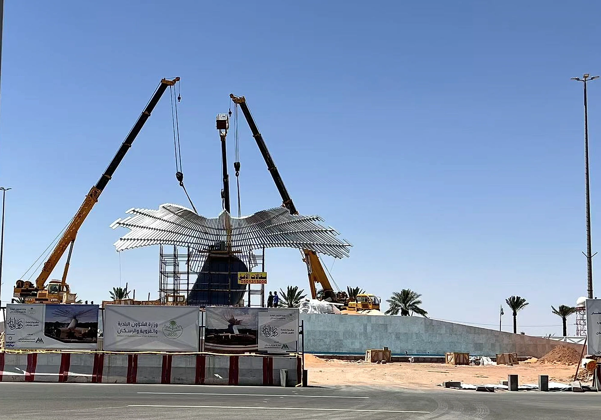
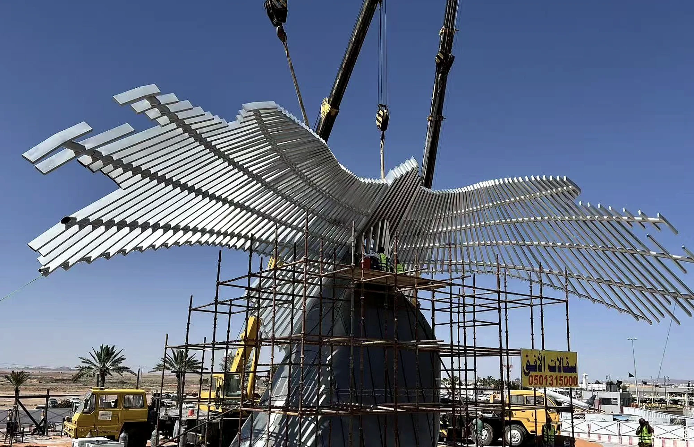

What should I send before requesting a quote?
Send site photos, plan dimensions, desired scale, material direction, destination country, deadline, and any installation constraints.
Stainless steel can look precise or harsh depending on grade, reflection, weld control, and site exposure. WEIERYANG develops stainless steel sculpture for public, coastal, garden, and resort projects with attention to brushed direction, 316L options, segmentation, and export-ready fabrication.



Send site photos, plan dimensions, desired scale, material direction, destination country, deadline, and any installation constraints.
Yes. Confidential drawings can be reviewed privately, and an NDA can be discussed before deeper technical review.
Common routes include bronze, 316L stainless steel, stone, corten steel, and hybrid combinations selected for exposure, touch, and maintenance.
The commission route can include segmentation, trial assembly, export packing, documents, and installation guidance for overseas projects.
Send drawings, site photos, scale, material direction, destination country, and schedule to begin a serious review.